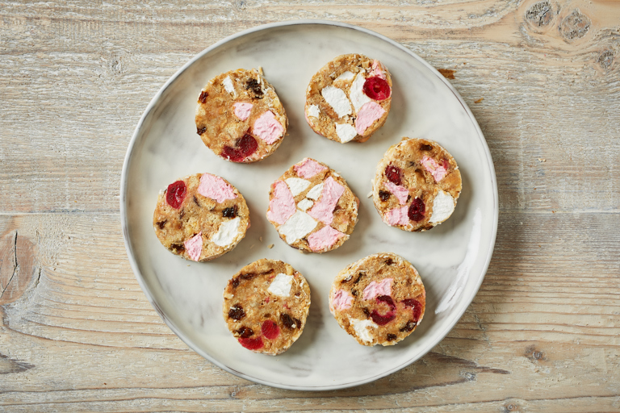

Fifteens Recipe

Description
This incredibly easy and quick to prepare traybake tastes like heaven on a plate
with its marshmallow, coconutty goodness! I like to use a combination of white
and pink marshmallows.
Ingredients
- 15 large marshmallows
- 15 digestive biscuits, crushed
- 15 red candied cherries, halved
- 2/3 cup sweetened condensed milk
- 1 cup sweetened flaked coconut
Steps
- Cut the marshmallows in halves using scissors, and place in a large bowl.
Toss with the digestive biscuits and candied cherries. Gradually stir in the
sweetened condensed milk until the mixture becomes a soft, moist dough. It
should not be too dry, so you may need to add a bit more of the milk.
- Spread a generous layer of coconut out on a clean surface, and place the
dough on top of it. Use your hands to form the dough into a long thick
sausage, making sure it is well coated with coconut. Wrap in a double layer
of plastic wrap, and refrigerate for 2 to 3 hours.
- Unwrap the long piece of dough, and cut into slices to serve.